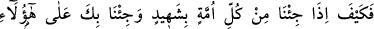
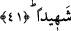
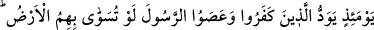
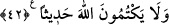

Mevlâna Celâleddin Rûmî (k.s.) şöyle diyor:
Ey kendini tanıyan, mes’ud ve bahtiyar kişi
Ebedî emniyet içinde cennette bir köşk düzdün
Ardından demir gibi siyah insan vücûdunu
Cilâlâ, cilâla, kulluk eyle unutma sücûdunu
Başından, genzinden nezleyi uzaklaştır
Burnuna dâimâ Hak kokusu ulaştır.
Kalmayınca sıtma ve safradan eser
İnsan bu âlemde şekerin tadına erer.
Allah Teâlâ bizi ve sizi ilâhî mâ’rifete ulaştırsın, rahmeti ile cennetine girdirsin.
41- Her bir ümmetten bir şahit getirdiğimiz ve seni de onlara şahit olarak
gösterdiğimiz zaman halleri nice olacak!
Kıyamet günü ümmetlerden “her bir ümmetten” içinde bulundukları inanç bozukluğu
ve fiil çirkinliğine şehâdet edecek “bir şâhit getirdiğimiz” -ki bu şâhit onların
peygamberi olacaktır- “ve seni de onlara şâhit olarak gösterdiğimiz zaman”
Yahûdîler’den, Hrıstiyanlar’dan ve diğer ümmetlerden olan kâfirlerin halleri nice
olacak!
Yâni, ey Muhammed, sen onların inançlarını bildiğinden ve senin şerîatın, onların
genel kâidelerini içinde bulundurduğu için onların doğruluklarına seni şahit getiririz.
Yâhut da hallerinden anlaşıldığı üzere inanmayıp yalanlayanlara işârettir ki diğer
peygamberler ümmetleri aleyhine şehâdet edecekleri gibi seni de onlara kâfirlik ve
isyanları konusunda şâhit getiririz.
42- Küfür yoluna sapıp peygamberi dinlemeyenler o gün yerin dibine batırılmayı
temenni ederler ve Allah’tan hiç bir haberi gizleyemezler.
Bu âyet, önceki âyette şiddetine ve dayanılmazlığına işâret edilen hallerin beyânıdır.